19 usability issues identified, all fixed
FemEntity is an AI-powered wellness platform that helps users find practitioners and resources based on their needs and preferences.
I joined after the initial onboarding concept had already been designed. I redesigned the flow and iterated on it as the product evolved, focusing on making the experience easier to get through without asking users to answer everything upfront.
The challenge was finding the right balance: we needed enough information for relevant personalization, but didn't want users to spend too much time answering questions before seeing value.
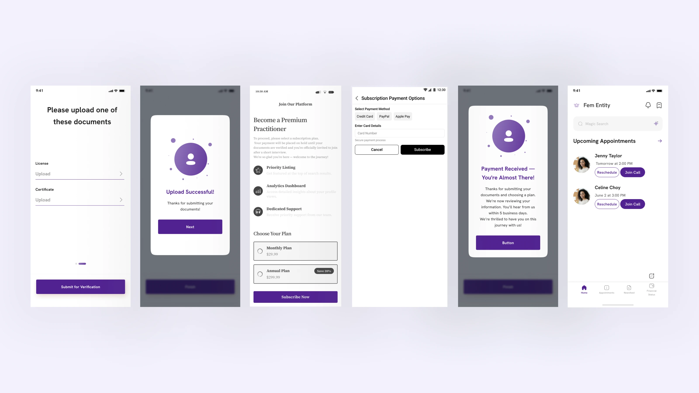
Initial onboarding draft done by non-designers
Across 2 user types (clients and practitioners), users had to answer a long series of questions before reaching value. This created unnecessary mental load, especially when sharing sensitive personal information.
Users were more comfortable sharing personal information when they understood why we were asking for it and how it would improve their experience.
The challenge was to decide what users needed to answer upfront and what could be collected later.
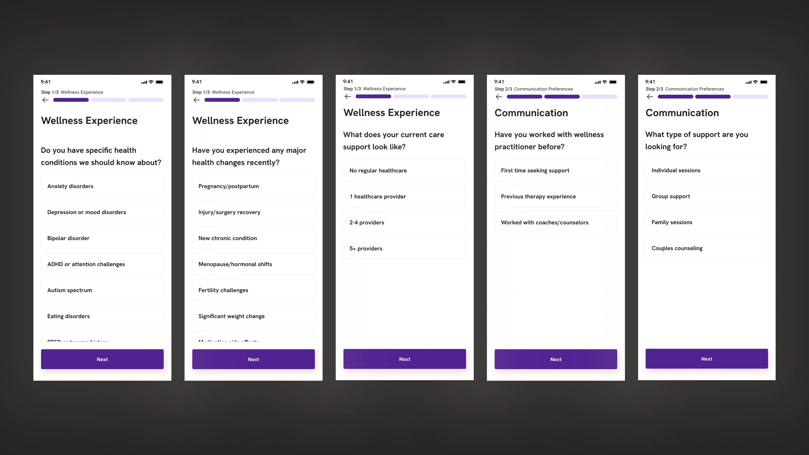
The previous onboarding. The flow asked for a lot of information upfront, with limited context around why it was needed.
I ran a heuristic evaluation of the existing flow and a thematic analysis of 20 user interviews (40 in total). Identified 19 usability issues (avg. severity 2.4/5) across the onboarding flow for 2 user types, and synthesized them into 15+ prioritized recommendations.
The interviews kept circling back to one point, where users were happy to share personal information, but only when they understood why we needed it and how it would make their recommendations better.
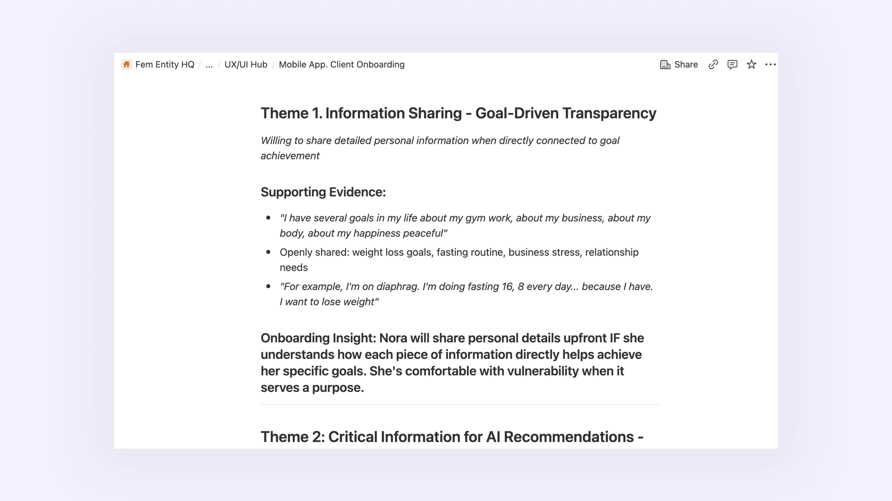
Thematic analysis from user interviews, surfacing key issues around trust and cognitive load.
In the redesign, I prioritized getting users to value faster, reducing the amount of thinking and decision-making required at the start, and making it clear why we needed each piece of personal information.
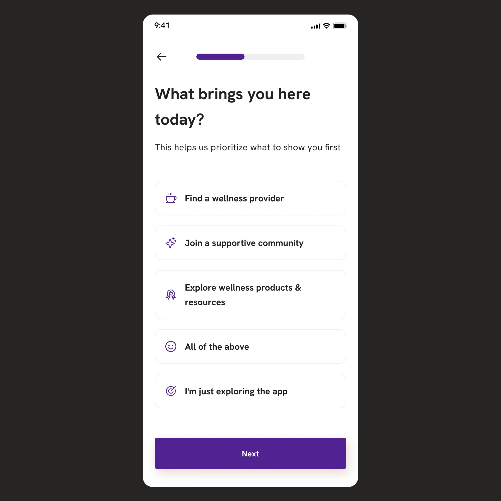
Rather than starting with demographic or personal details, we wanted to understand what the user was looking for first. This also helped connect the onboarding questions to the value FemEntity could provide.
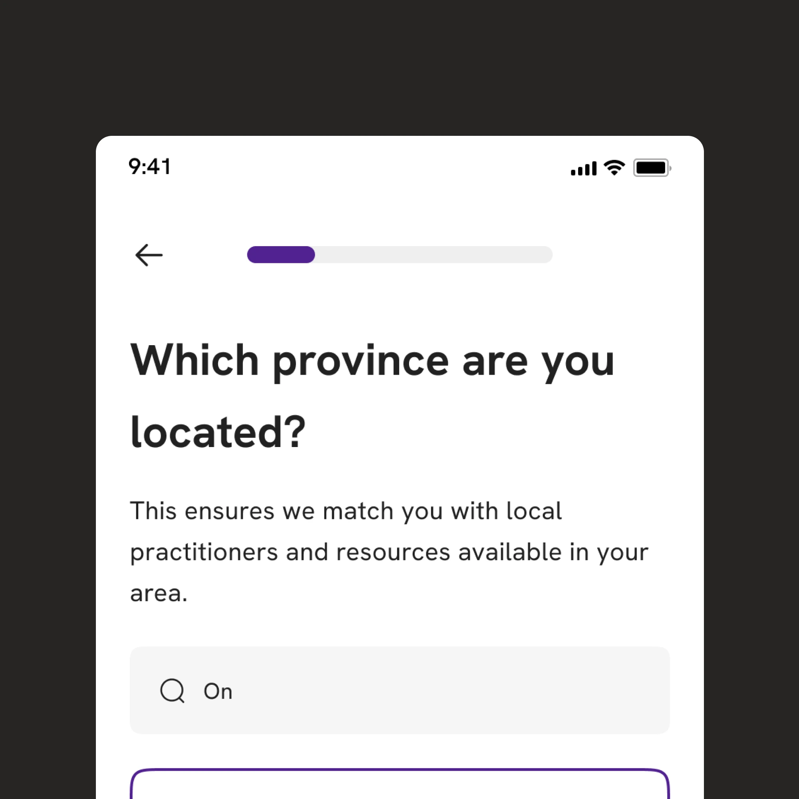
With my design colleague, we restructured the onboarding around progressive disclosure. Essential information comes first, while more detailed profile information can be collected later.
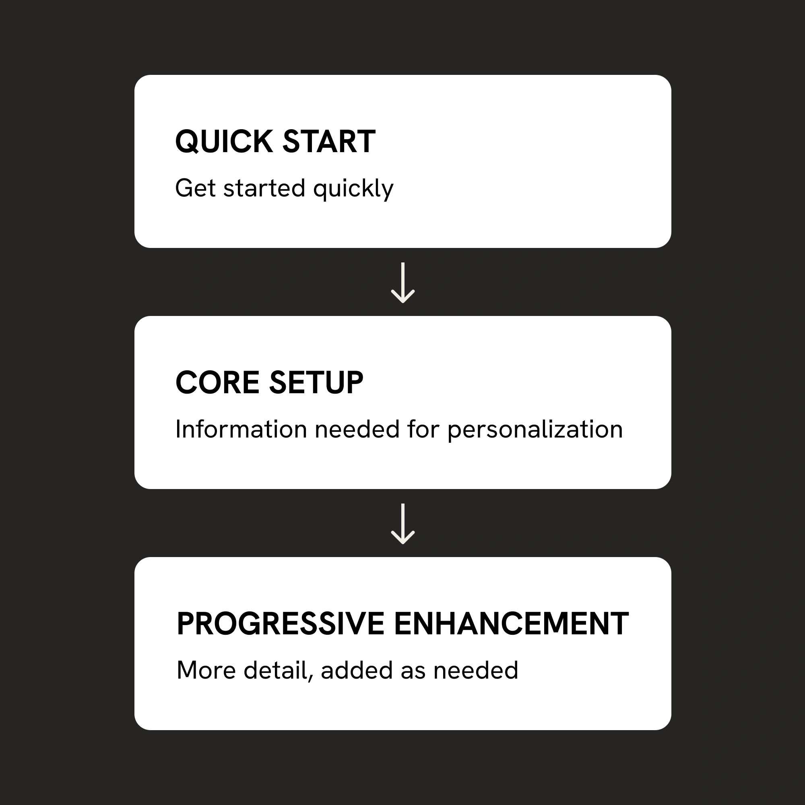
We added context around questions such as location, interests, and challenges instead of asking for information without explaining its purpose.
Small UI decisions also mattered, not just the overall flow. For example, I explored different chip styles and states: multi-select, single-select, colour-coded, and plain, and compared how clear and easy to scan they were when showing 10+ options on a small screen.
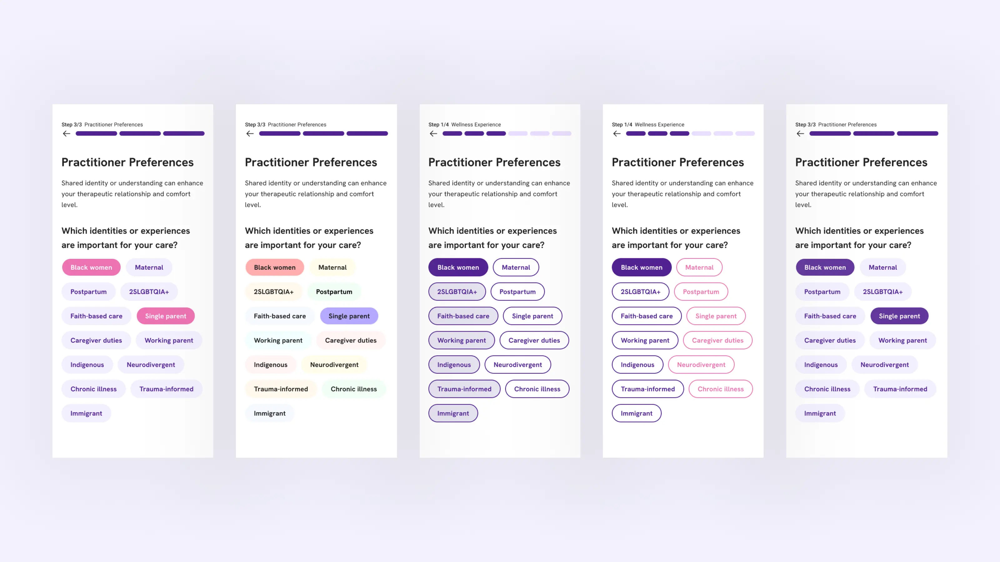
Chip explorations: colour, contrast, and selection states across multiple variants.
FemEntity has two very different user types, so we couldn't use the same onboarding for both. I designed separate journeys for clients and practitioners, with different questions and priorities for each.
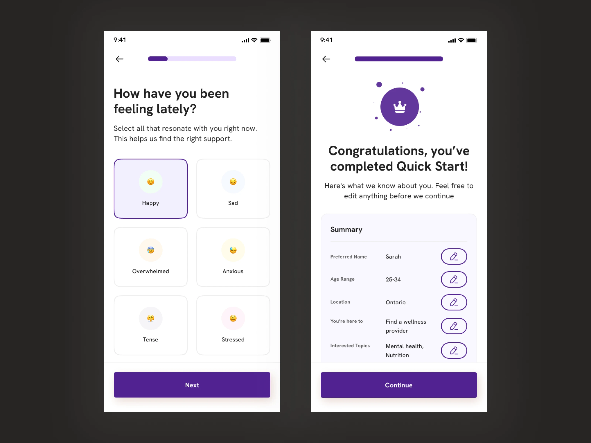
Client onboarding screens
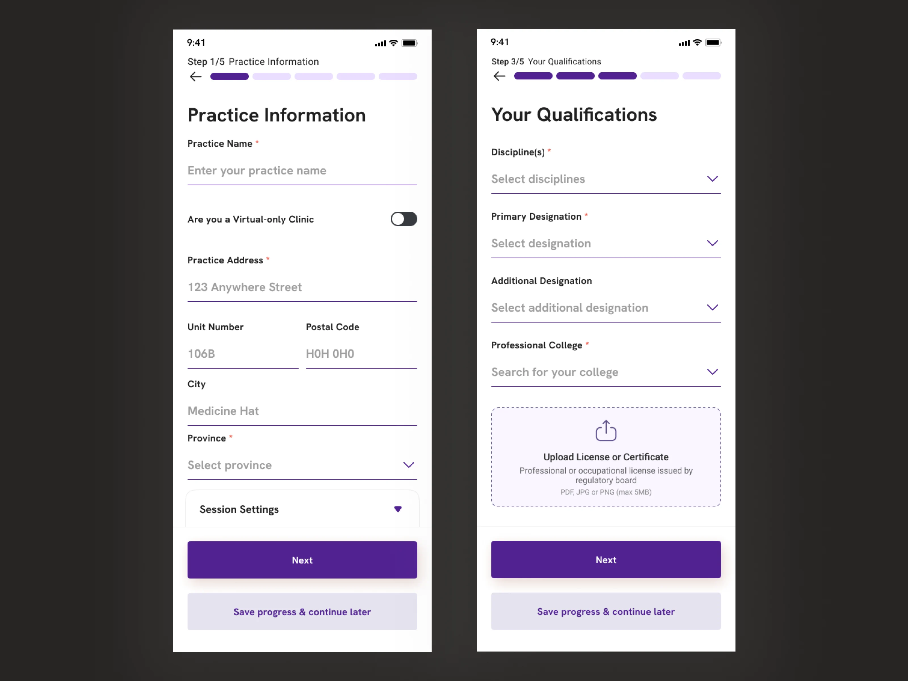
Practitioner onboarding screens
FemEntity was still pre-launch, so we didn't have production data to compare completion rates. Instead, we used usability testing and user feedback to see whether the new flow was easier to understand and complete.
The final onboarding evolved through multiple iterations as we negotiated between keeping the flow simple for users and collecting enough structured data to power relevant recommendations and AI matching.
The final flow collects information in stages instead of asking users to complete everything at once.
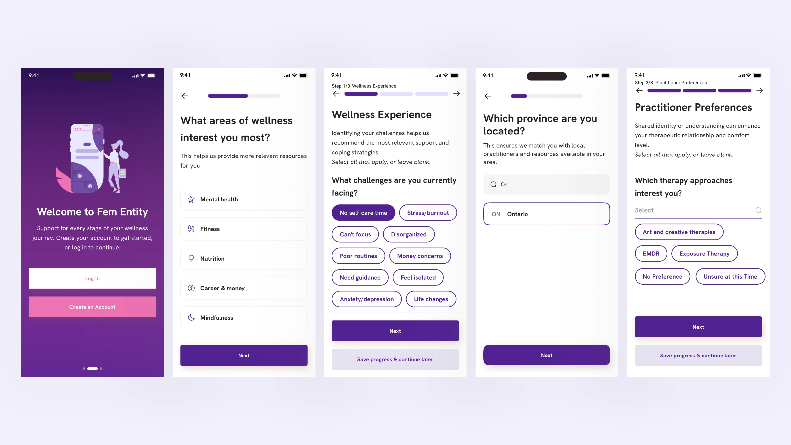
The final flow collects information in stages instead of asking users to complete everything at once.
To validate the redesigned flow, I defined a usability testing plan that measures both task performance and perceived experience. The study is currently in progress.
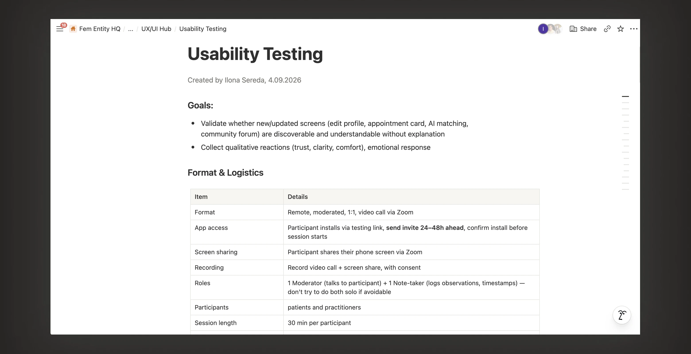
Usability testing document: measurement plan and data collection in progress.
Conversion data to be updated. The targets below are for post-launch validation, measured against the current flow, which I assessed through a flow audit and a heuristic evaluation.
These targets will be validated through usability testing and post-launch data.
Fewer screens do not automatically make onboarding easier. Users need to understand why information is being collected and how it improves their experience.
Progressive disclosure also needs reliable system feedback: users must know what has saved, what happens next, and whether they can complete remaining steps later.